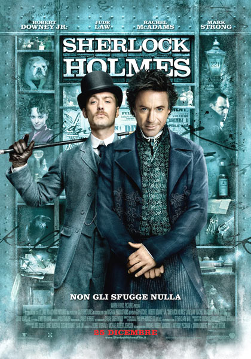

Film polizieschi disponibili nel nostro store. Cliccando sulla copertina del film potrai visualizzare la pagina wikipedia relativa.
|  | ||
| The Departed | Legend | Sherlock Holmes |
| Barry Seal - Una storia americana | Diabolik | Gone Baby Gone |
| Il Traditore | Inside Man | Training Day |
| Back to top |